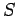
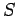

Inhalt Index DeskTop Bronstein

 Vektoranalysis und Feldtheorie Integration in Vektorfeldern Integralsätze Integralsatz und Integralformel von Gauß
Vektoranalysis und Feldtheorie Integration in Vektorfeldern Integralsätze Integralsatz und Integralformel von Gauß


Der Integralsatz von GAUSS liefert den Zusammenhang zwischen einem Volumenintegral über ein Volumen  , das von einem Feld
, das von einem Feld  durchsetzt ist, und einem Oberflächenintegral über die dieses Volumen umschließende Fläche . Die Orientierung der Fläche sei so festgelegt, daß die Außenseite die positive Seite ist. Die vektorielle Feldfunktion
durchsetzt ist, und einem Oberflächenintegral über die dieses Volumen umschließende Fläche . Die Orientierung der Fläche sei so festgelegt, daß die Außenseite die positive Seite ist. Die vektorielle Feldfunktion  soll stetig sein, ihre ersten partiellen Ableitungen sollen existieren und stetig sein.
soll stetig sein, ihre ersten partiellen Ableitungen sollen existieren und stetig sein.
| (13.117a) |
Der skalare Fluß des Feldes  durch die geschlossene Fläche S ist gleich dem Integral der Divergenz von
durch die geschlossene Fläche S ist gleich dem Integral der Divergenz von  über das von S umschlossene Volumen v. In kartesischen Koordinaten gilt:
über das von S umschlossene Volumen v. In kartesischen Koordinaten gilt:
| (13.117b) |